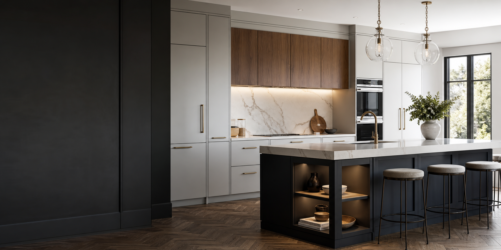
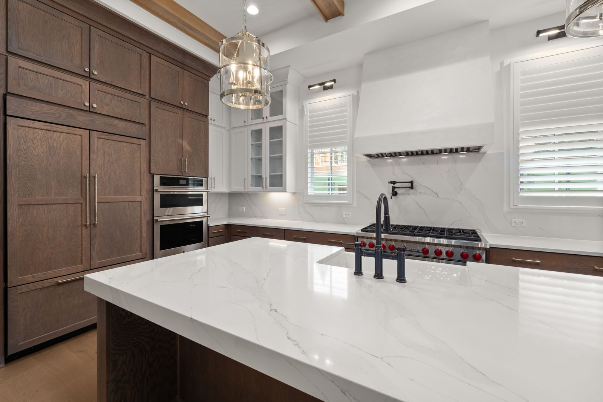
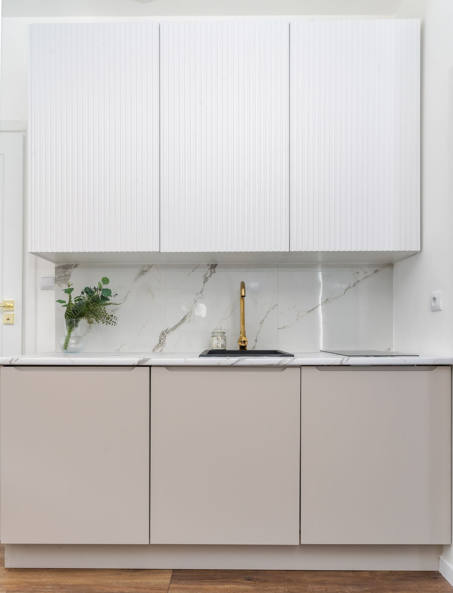
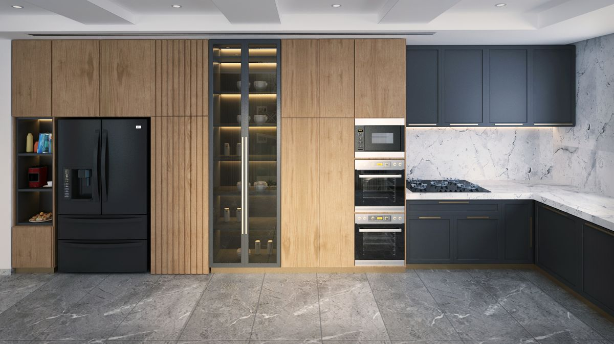
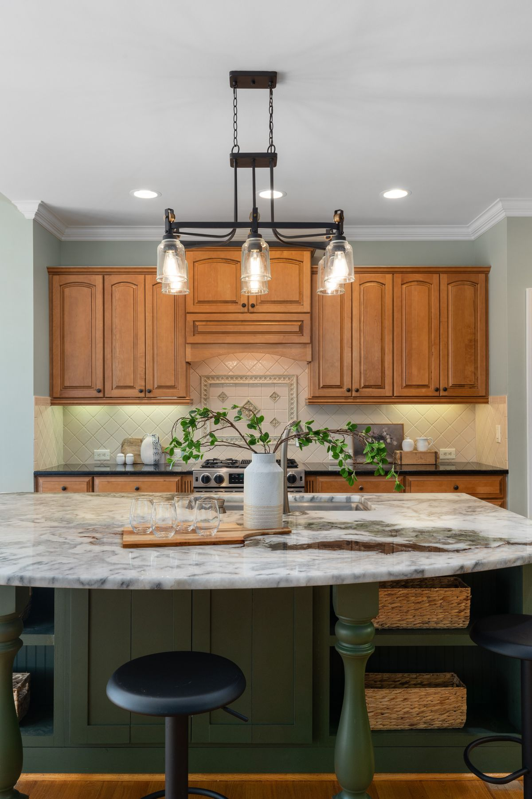
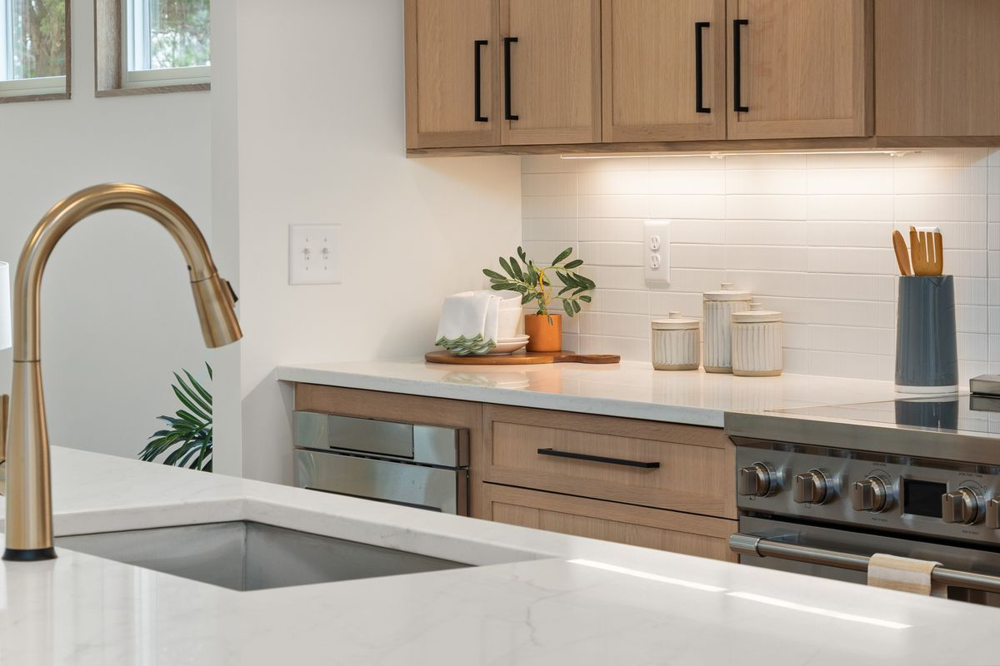

Кухни на заказ
Планировка, фасады, корпуса, фурнитура, столешница и монтаж в одном проекте.

Кухни мира
Кухни и мебель для жизни, а не для фото. Создаем комфорт, порядок и ощущение дома: от проекта и точного замера до производства, доставки и монтажа.
Идеи для будущей кухни
Подобрали спокойные и современные интерьерные референсы: дерево, камень, чистые фасады, продуманное хранение и мягкий свет. Это не каталог готовых работ, а направления, которые можно адаптировать под ваш проект.





Что делаем
Работаем с кухнями, ванными, зонами хранения и изделиями из искусственного камня. Каждый проект запускаем под конкретное помещение, а не под усредненный шаблон.
Планировка, фасады, корпуса, фурнитура, столешница и монтаж в одном проекте.
Тумбы, столешницы, подоконники и решения для влажных зон.
Столешницы на кухню и ванную, подоконники и литые мойки.
Любые варианты фрезеровки, радиусные фасады и аккуратная детализация.
Преимущества
Помогаем пройти весь путь: от первой консультации до сдачи готовой мебели.
Проверяем размеры, конструктив, материалы и каждую важную деталь перед производством.
Для нас лучший показатель качества - когда люди приходят снова и советуют нас близким.
Фурнитура и материалы
Подбираем механизмы под сценарий использования, вес фасадов и желаемый комфорт.
Используем практичные материалы для корпусов, фасадов и рабочих поверхностей.
Делаем спокойные минималистичные фасады, выразительную фрезеровку и радиусные формы.
Искусственный камень
Для кухни и ванной можно сделать цельную рабочую поверхность, аккуратные стыки, практичные бортики и интегрированную мойку.
Как проходит работа
Каждый этап нужен, чтобы мебель совпала с проектом, помещением, материалами и ожиданиями клиента.
Обсуждаем пожелания, отвечаем на вопросы и выбираем время для замера.
Снимаем точные размеры и учитываем технические особенности.
Создаем проект под ваши пожелания или работаем по проекту вашего дизайнера.
Утверждаем дизайн, материалы, стоимость, сроки и детали будущей мебели.
Повторно проверяем размеры перед производством, чтобы исключить неточности.
Технолог проверяет конструктив, функциональность и готовит документацию.
Индивидуально заказываем материалы именно под ваш проект.
Изготавливаем мебель по утвержденным параметрам и стандартам качества.
Организуем бережную доставку готовой мебели на объект.
Профессионально устанавливаем мебель и сдаем полностью готовый проект.
Отзывы
Реальные отзывы клиентов из 2ГИС: про сроки, аккуратный монтаж, качество материалов и спокойный процесс без лишних переживаний.
Честно говоря, сначала переживала заказывать кухню, потому что слышала много историй про задержки и некачественную сборку. Но здесь всё прошло без проблем. Замерщик приехал вовремя, внимательно выслушал все пожелания, проект сделали с учетом розеток и техники. Установили кухню по указанному сроку. Пользуемся уже около полугода, фасады на месте. Спасибо за хорошую работу!
Хотелось кухню, которая будет и красивой, и практичной. Долго искали и не зря выбрали именно эту компанию. Сделали проект, показали, и итог оказался даже лучше, чем на картинке. Всё аккуратно, ровно, без зазоров. Материалы качественные, легко ухаживать. Кухня стала настоящим сердцем нашего дома.
Хотелось, чтобы кухня выглядела современно, но без излишеств. Подобрали идеальный вариант, результатом довольна на 100%.
Контакты
Работайте с тем каналом, который удобнее: звонок, WhatsApp или Instagram. Адрес: Уральск, пр. Абулхаир Хана, 175. График работы: 10:00-19:00, воскресенье - выходной.